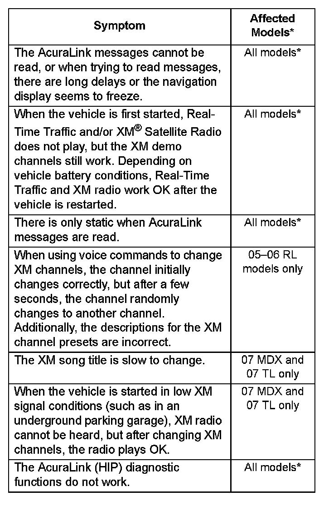
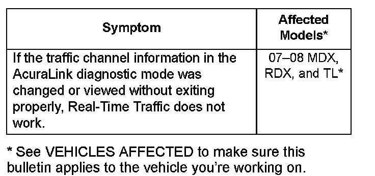
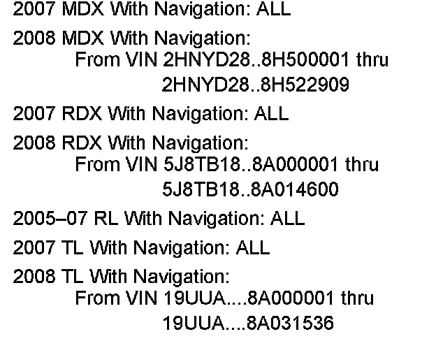
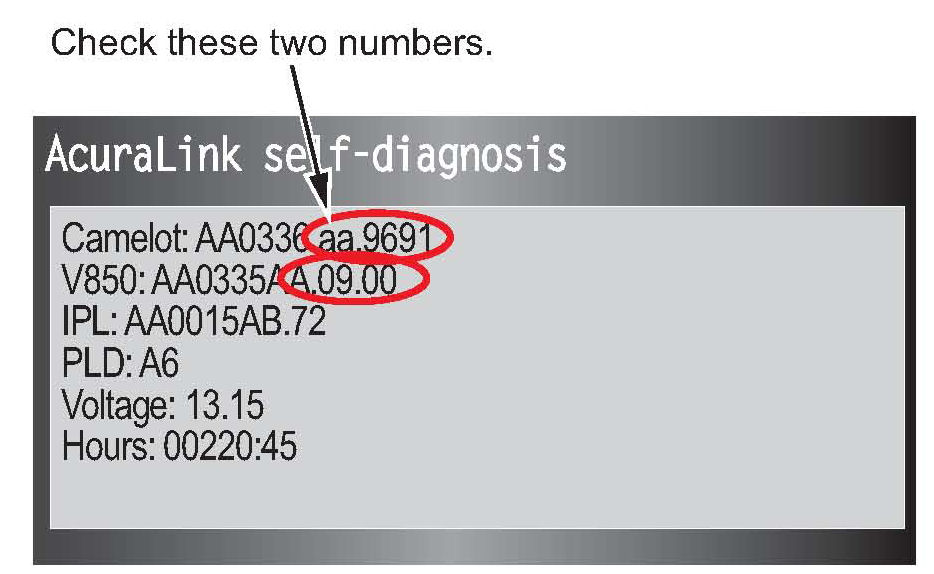
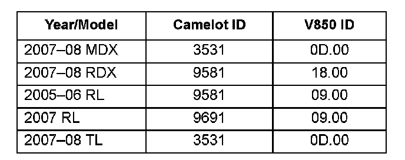
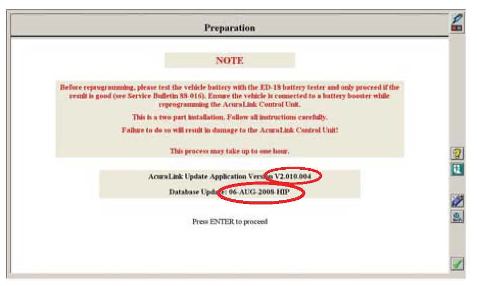

AcuraLink(R) - Various Issues
08-021August 26, 2009
Applies To:
See VEHICLES AFFECTED
AcuraLink Messages Cannot Be Read, There Is No XM Radio or Traffic, or
XM Channels Are Wrong
(Supersedes 08-021, dated October 16, 2008, to revise the information marked by asterisks)
*REVISION SUMMARY
Under CORRECTIVE ACTION, in the NOTE, the year range for the RL was changed and alternative repair instructions have been provided.*
SYMPTOM
There are multiple symptoms that the client may complain about that are related to this service bulletin.


These symptoms are difficult to reproduce. If the client has any of these complaints, go to DIAGNOSIS to check the AcuraLink software versions.
This bulletin does not address these issues:
^ Complaints relating to HandsFreeLink (HFL), which are not related to the AcuraLink control unit.
^ XM preset descriptions sometimes being slow to display on the navigation audio screen; this is normal.
^ Complaints of poor XM reception.
^ No Real-Time Traffic due to incorrect client traffic settings (traffic icon or icon options set to oft). Refer to the appropriate service manual or Service Bulletin 05-026, No Real-Time Traffic on the Display
^ No Real-Time Traffic in areas with no traffic coverage. Refer to the appropriate service manual or Service Bulletin 05-026, No Real-Time Traffic on the Display

VEHICLES AFFECTED
CORRECTIVE ACTION
Do the diagnosis and, if needed, update the AcuraLink control unit software with the GNA600.
NOTE:
The AcuraLink control unit has two functions and operates using two separate software programs:
Real-Time Traffic, which is the main program that is identified as the Camelot software version, and XM, which is the subprogram that is identified by the V850 software version. The software update for this bulletin corrects issues with both Real-Time Traffic and XM, so the updating procedure will update both the Camelot and V850 software versions.
* 2005 RL: The software in the original AcuraLink control unit in the 2005 RL cannot be updated, and the Product Update campaign for this control unit has ended. If an affected vehicle still needs the repair, use normal service manual troubleshooting procedures to repair the listed problems. Any applicable warranty will still apply.*
SOFTWARE INFORMATION
To complete the procedure in this service bulletin, the following software (or later) must be loaded into your workstation by the dealer's network administrator.
HDS Software Version:
2.013.017 (red CD) or later.
Database Update:
28-Jan-2008-HIP or later
The updated AcuraLink software program versions are shown in the table. When you complete the AcuraLink control unit update, you will be instructed on how to verify the updated software versions.
NOTE:
^ If you use an earlier HDS software version or AcuraLink Software Database, the iN workstation may show that the vehicle does not need an update when it actually does.
^ The AcuraLink Software Database is part of the HDS software. Not all HDS software versions include a new database update. The AcuraLink software IDs of the update in this bulletin are shown in the table in DIAGNOSIS. Note that the software includes two programs, the main program (Camelot ID) and the subprogram (V850 ID).
^ For questions or problems with the AcuraLink update software, call the American Honda Special Tools hotline.
TOOL INFORMATION
iN Workstation (with the latest HDS software installed)
GNA600 Kit: P/N GNA600KIT
AcuraLink Reprogramming Cable Adapter
(required for TL and MDX only):
P/N NUD420300H1P
NOTE:
^ The GNA600 kit (P/N GNA600KIT) and the AcuraLink Reprogramming Cable Adapter (P/N NUD420300H1P) have already been shipped to your dealership.
^ Replacement kits (P/N GNA600KITA) do not include:
- AcuraLink Reprogramming Cable Adapter (required for TL and MDX only):
P/N NUD420150H1P
- 256 MB PCMCIA Memory Card:
P/N SSDP25M3012
^ The GNA600 kit, the AcuraLink reprogramming cable adapter, and the memory card are available through the Acura Tool and Equipment Program. Call.
^ For questions or problems with the GNA600, call the American Honda Special Tools hotline.
WARRANTY CLAIM INFORMATION
In warranty:
The normal warranty applies.
Operation Number: 010306
Flat Rate Time: 0.9 hour
Failed Part: P/N 39820-SJA-A52
Defect Code: 03214
Symptom Code: 01201
Skill Level: Repair Technician
Out of warranty:
Any repair performed after warranty expiration may be eligible for goodwill consideration by the District Parts and Service Manager or your Zone Office. You must request consideration, and get a decision, before starting work.
DIAGNOSIS
1. Check the current Camelot and V850 software versions in the AcuraLink (HIP) control unit:
^ Turn the ignition switch to ON (II), then select OK to accept the navigation system disclaimer.
^ Using the navigation buttons, press MAP, MENU, and CANCEL simultaneously until the Select Diagnosis Items screen comes on.
^ On the navigation screen, select XM (HIP).
NOTE:
Do not select and change any of the other settings, or one or more systems may not operate properly.

^ Select either AcuraLink self-diagnosis or Telematics self-diagnosis.

2. Compare the Camelot and V850 versions with the versions shown in the table.
^ If either the Camelot or the V850 version is an earlier version (lower letter or number) than the number shown in the table, go to REPAIR PROCEDURE.
^ If both the Camelot and the V850 versions are the same version or later (higher letter or number) than the number shown in the table, this bulletin does not apply; refer to the appropriate service manual or Service Bulletin 05-026, No Real-Time Traffic on the Display, for additional troubleshooting information.
REPAIR PROCEDURE
NOTE:
To better see the on-screen steps on the workstation and the indicators on the GNA600, back the vehicle into your work area.
1. From the Windows Start menu on your iN workstation, go to Programs and select CM Update, then select AcuraLink Update. Follow the on-screen instructions. Make sure that the first screen shows the application version V2.008.003 or later, and Database Update 28-Jan-2008-HIP or later. If the versions are not correct, contact your dealer's network administrator to load the HDS update CD.

For more information on updating the AcuraLink control unit, refer to Service Bulletin 07-027, Updating the AcuraLink Control Unit
2. Confirm that the AcuraLink control unit software was properly updated:
^ Make sure the ignition switch is in ON (II), then select OK to accept the navigation system disclaimer.
^ On the navigation buttons, press MAP, MENU, and CANCEL simultaneously until the Select Diagnosis Items screen comes on.
^ On the navigation screen, select XM (HIP) ECU.
NOTE:
Do not select and change any of the other settings, or one or more systems may not operate properly.
^ Select either AcuraLink self-diagnosis or Telematics self-diagnosis.
3. Compare the Camelot and V850 versions with the versions shown in the table in SOFTWARE INFORMATION.
^ If the Camelot and the V850 versions are the same as the ones you read earlier in DIAGNOSIS, repeat the updating procedure. Do not replace the AcuraLink control unit.
^ If both the Camelot and the V850 versions are the same as the versions shown in the table, the updating procedure is complete.

Disclaimer